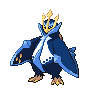

エンペルトのデータ
基本ステータス
もちもの・メダル・条件付き効果なし。割合の値は％です。待ち時間は短縮率、移動速度はゲーム内の値です。
| Lv | HP | 攻撃 | 防御 | 特攻 | 特防 | 移動速度 | 急所率 | 待ち時間 | HP吸収率 | 通常攻撃の速さ | 貫通 |
|---|---|---|---|---|---|---|---|---|---|---|---|
| 1 | 3250 | 20 | 80 | 80 | 65 | 3700 | 0 | 0 | 0 | 10 | 0 |
| 2 | 3325 | 21 | 86 | 88 | 70 | 3700 | 0 | 0 | 0 | 10.5 | 0 |
| 3 | 3415 | 23 | 94 | 98 | 76 | 3700 | 0 | 0 | 0 | 11.1 | 0 |
| 4 | 3523 | 25 | 103 | 110 | 83 | 3700 | 0 | 0 | 0 | 11.82 | 0 |
| 5 | 4047 | 34 | 147 | 169 | 116 | 3850 | 10 | 0 | 5 | 15.31 | 0 |
| 6 | 4204 | 37 | 160 | 187 | 126 | 3850 | 10 | 0 | 5 | 16.35 | 0 |
| 7 | 4786 | 48 | 209 | 252 | 163 | 4000 | 10 | 0 | 5 | 20.23 | 0 |
| 8 | 5011 | 52 | 228 | 277 | 177 | 4000 | 10 | 0 | 5 | 21.73 | 0 |
| 9 | 5281 | 57 | 251 | 307 | 194 | 4150 | 20 | 0 | 10 | 23.53 | 0 |
| 10 | 5605 | 63 | 278 | 343 | 215 | 4150 | 20 | 0 | 10 | 25.69 | 0 |
| 11 | 5994 | 70 | 311 | 387 | 240 | 4300 | 20 | 0 | 10 | 28.29 | 0 |
| 12 | 6461 | 78 | 350 | 440 | 270 | 4300 | 20 | 0 | 10 | 31.4 | 0 |
| 13 | 7021 | 88 | 397 | 503 | 306 | 4300 | 20 | 0 | 15 | 35.14 | 0 |
| 14 | 7693 | 100 | 453 | 579 | 349 | 4300 | 20 | 0 | 15 | 39.62 | 0 |
| 15 | 8500 | 115 | 520 | 670 | 400 | 4300 | 20 | 0 | 15 | 45 | 0 |

エンペルト急所・HP吸収などの仕様
急所の対象は通常攻撃です。
通常攻撃にはHP吸収が適用されません。
通常攻撃
効果・条件の説明
ポッチャマは水を飛ばし、3回目が強化攻撃になります。通常・強化攻撃でげきりゅうゲージが増えます。原文では段階に応じた増加量が2／3／4と記載されています。
わざ1
みずでっぽう
効果・条件の説明
指定方向へ水を撃って攻撃します。げきりゅうゲージが50未満ならゲージが増え、特性で強化されると威力が上がります。
ハイドロカノン
効果・条件の説明
水の弾を撃ち、当たった相手を短時間行動不能にします。
通常版の効果・条件
水の弾が当たった相手を0.5秒間行動不能にします。「げきりゅう」で強化されると、3秒間残る渦を作ります。渦は0.5秒ごとに相手へダメージを与え、中にいる自分のHPも回復します。
ハイドロカノン+
効果・条件の説明
強化後の変更点：相手チームのポケモンに命中すると、残り待ち時間が30%短くなります。
通常版の効果・条件
水の弾が当たった相手を0.5秒間行動不能にします。「げきりゅう」で強化されると、3秒間残る渦を作ります。渦は0.5秒ごとに相手へダメージを与え、中にいる自分のHPも回復します。
うずしお
効果・条件の説明
妨害無効になり、自分の周囲に渦を作って連続攻撃します。
通常版の効果・条件
通常版は1秒間妨害無効となり、0.25秒ごとに最大4回攻撃します。相手チームのポケモンへ与えたダメージの50%を回復し、野生相手は25%を回復します。「げきりゅう」で強化されると0.6秒間吹き飛ばし、最後に斬撃を追加します。妨害無効は1.33秒まで延び、回復は相手チームへ与えたダメージの60%、野生相手は30%になります。
うずしお+
効果・条件の説明
強化後の変更点：ダメージが増え、HP回復量が与えたダメージの60%になります。野生のポケモンからの回復量は半分です。
通常版の効果・条件
通常版は1秒間妨害無効となり、0.25秒ごとに最大4回攻撃します。相手チームのポケモンへ与えたダメージの50%を回復し、野生相手は25%を回復します。「げきりゅう」で強化されると0.6秒間吹き飛ばし、最後に斬撃を追加します。妨害無効は1.33秒まで延び、回復は相手チームへ与えたダメージの60%、野生相手は30%になります。
わざ2
つつく
効果・条件の説明
鋭いくちばしで前方を攻撃します。げきりゅうゲージが50未満ならゲージが増え、特性で強化されると減速効果が付きます。
効果・条件
「げきりゅう」で強化された攻撃が命中すると、相手の移動速度を2秒間40%下げます。
メタルクロー
効果・条件の説明
指定した相手へ突進し、鋼の翼で攻撃して押し出します。
通常版の効果・条件
相手を0.25秒間押し出します。「げきりゅう」で強化されると3秒間のシールドを得ます。同じわざのシールド同士は重なりません。
メタルクロー+
効果・条件の説明
強化後の変更点：特性「げきりゅう」のシールドが強くなります。
通常版の効果・条件
相手を0.25秒間押し出します。「げきりゅう」で強化されると3秒間のシールドを得ます。同じわざのシールド同士は重なりません。
アクアジェット
効果・条件の説明
指定方向へ素早く突進し、ダメージを与えて通常攻撃速度を上げます。
通常版の効果・条件
使用すると通常攻撃速度が5秒間40%上がります。「げきりゅう」で強化された攻撃は、命中した相手の特防を3秒間60%下げます。
アクアジェット+
効果・条件の説明
強化後の変更点：待ち時間が1秒短くなります。
通常版の効果・条件
使用すると通常攻撃速度が5秒間40%上がります。「げきりゅう」で強化された攻撃は、命中した相手の特防を3秒間60%下げます。
ユナイトわざ
ユナイトわざ使用後の共通強化
移動速度30%上昇、わざの待ち時間短縮30%、最大HPの20%のシールド（6秒）
皇帝オンスロート
効果・条件の説明
高速で滑り込み、命中地点か最大距離で渦を起こして攻撃します。
無敵・妨害への耐性
このわざの動作中は妨害無効になります。
効果・条件
命中した相手を1秒間吹き飛ばし、自分の周囲に7秒間の渦を残します。渦の範囲内にいる相手の移動速度を50%下げ、範囲を離れても1秒間減速が残ります。渦がある間はげきりゅうゲージの自然増加量が増えます。